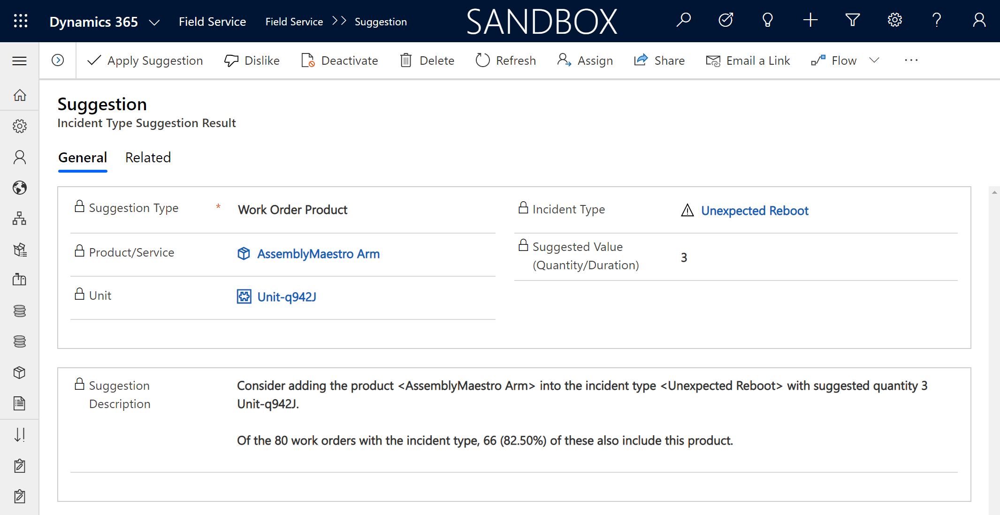
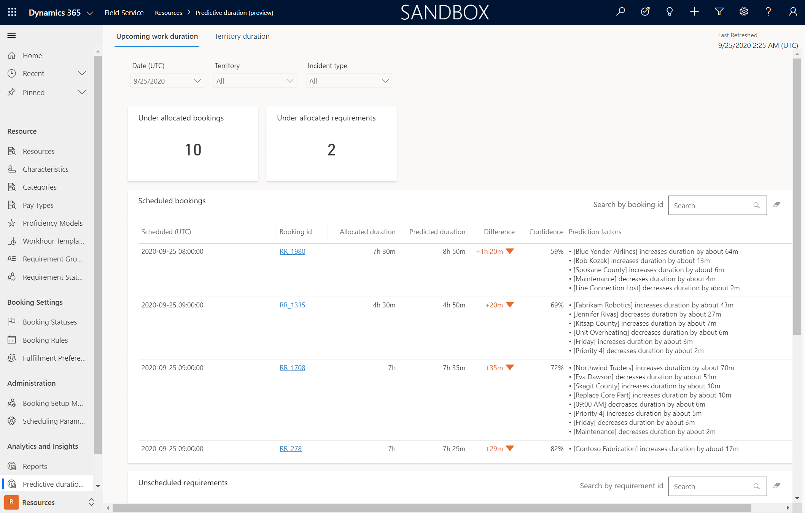
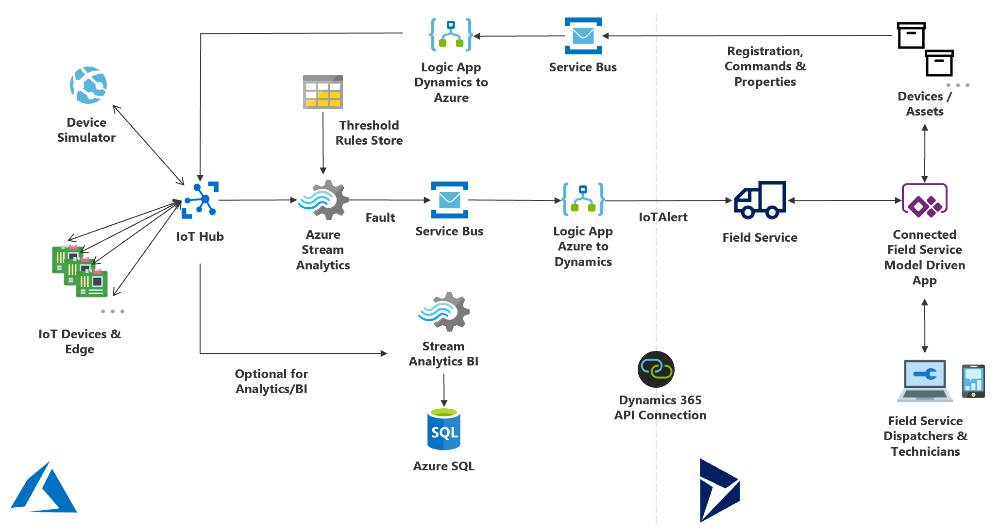
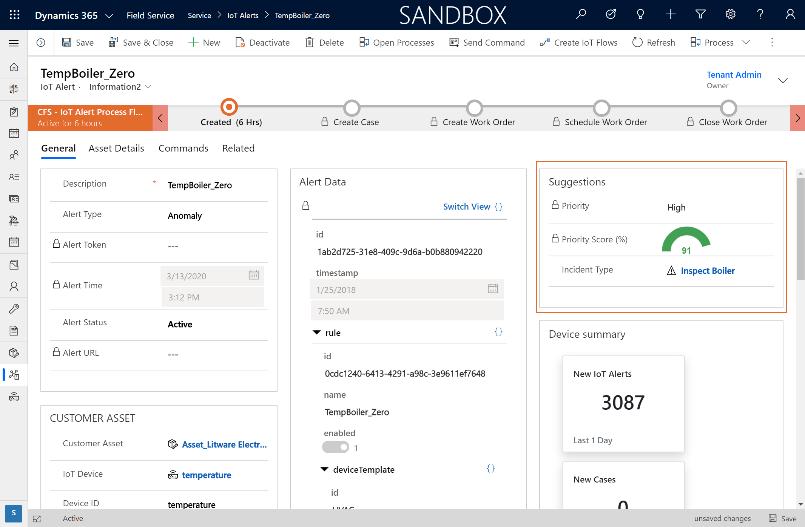

Every story in this book is real and anonymized. Every chapter ends with one thing you can try this week with the system you already own. The screenshots are real Dynamics 365 Field Service builds, used as illustrations of the patterns. Feature names and availability change by release wave.
01
The honest state of AI in field service
Before we talk about AI, we have to agree on what a good day looks like.
A technician's best day looks like this. Leave the house. Drive to the site. Turn wrenches all day with a hard hat on. Go home. No meetings. No emails. Nobody from the office calling to ask if they're free next week Tuesday. Show up. Do the work. Go home. That's the happy path, and every technician I've ever managed would sign it in ink.
Now notice who interrupts that day. Dispatch. Billing. IT. Administration with a new policy. The happy path of the front office runs directly thru the technician's worst day. And here's the thing: every piece of a field service deployment that isn't focused on wrench time and the moment in front of the customer is where the friction comes from. That's true of your FSM system, and it's doubly true of every AI feature you bolt onto it.
Field service companies run a culture of safety. They open meetings with safety talks, back their trucks into parking spots, and cone their own lot. Then a software team shows up speaking LLMs and structured data governance, and the two sides stare at each other like foreigners. Most AI projects don't fail on the technology. They fail in that gap.
Hot take 01
Most "mature" AI implementations in field service are theater. Half the orgs quoting maturity models are running spreadsheets next to the dashboard.
The industry numbers back the skepticism. IBM's research across 1,200+ enterprise deployments found that only 33% of AI initiatives meet their ROI targets, and 72% have failed to scale beyond one business unit. Aquant's 2026 benchmark says the gap between top and bottom performers is enormous: an 88% first‑time fix rate at the top against 60% at the bottom. AI didn't create that gap. Operating discipline did. AI just widens it, in whichever direction you're already headed.
33%
of AI initiatives meet ROI targets (IBM, 2025 to 2026 research)
72%
fail to scale past one business unit (IBM)
88 / 60
first‑time fix %, top vs bottom performers (Aquant 2026)
So this book has one yardstick, and we'll use it in every chapter: does this AI workload make the technician's job easier and the wrench time better? If yes, it earns its seat. If it just gives the office another dashboard, it's friction with a subscription fee.
Try ThisAsk three technicians one question this week: "What interrupted your work the most in the last five days?" Write the answers down, word for word. That list is your AI roadmap, already sorted by priority.
02
The AI workload map
Every AI pitch you'll hear this year is selling one of three different machines. They all wear the same badge.
Batch AI. A scheduling optimizer (Microsoft's is Resource Scheduling Optimization, RSO) that evaluates the whole board at once: work orders, technicians, skills, territories, travel, SLAs, parts. It runs on a schedule, not in real time, by design. It's a chess engine, not a copilot.
Real‑time suggestions. Decision support in the moment: a schedule assistant proposing the best technician, a suggested priority on an alert. Fast, narrow, per‑decision.
Generative AI. Copilots and agents that read context and produce language: summaries, reports, knowledge answers. Brilliant with clean context. Confidently wrong without it.
Three machines, three failure modes, three data appetites. When a seller says "our AI optimizes your field service," your first question is: which of the three is this? If they can't answer cleanly, that is your answer.
The six layers you can actually buy
Inside a platform like Dynamics 365 Field Service (Salesforce and IBM have parallel stacks), the AI catalogue breaks into six workloads.
Try ThisLabel your last three AI demos: batch, real‑time, or generative, and which layer. A pitch spanning all six in one SKU is selling you a story.
03
Data readiness
Your work order history matters more than the model. Nobody wants to hear it. It decides everything.
A mining equipment manufacturer rolled out field service across nine languages. Real crews mixed a specialist from headquarters, a regional engineer, and local technicians around one machine. The gap got bridged the only way it ever does on a job site: everybody around the same official manufacturer documentation. Except the manuals weren't translated into all nine languages. And the job site was a mine, no internet, and nothing cloud‑hosted was going to save anyone down there.
The fix wasn't a bigger model. The system was rebuilt to track two things it had never tracked: the technician's language, and the languages needed at each location. Manuals went portable and on‑device, offline, in every language a site might need. AI earned its seat there doing the least glamorous job imaginable, translating technical manuals, and it was the highest‑value AI line item in the deployment.
The lessonKnowledge is data, with the same readiness requirements as your customer records. If it can't reach the technician at the point of work, offline included, no assistant built on top of it will either.
Every generative feature in chapter 02 reads your work order history as its source of truth. If your closed work orders say "fixed" in the resolution field and nothing else, that's what your AI knows about your business: nothing, confidently.
68%
face data‑quality or silo challenges implementing AI (Geotab 2025)
85%
of operators struggle with poor‑quality, fragmented data (IBM)
#1
data quality: the top barrier to agentic AI adoption (IBM)
Data readiness isn't a two‑year data warehouse project, either. That's the other failure mode: getting so lost in "fixing the data" that no workload ever ships. Scheduling optimization needs clean skills, territories, and durations. Copilot needs honest resolution notes. Predictive maintenance needs asset history. Score the data the workload touches. Ignore the rest until its turn.
Try ThisRun the Work Order Quality Quiz. The scoresheet is on the next page. Pull twenty closed work orders, score them, add it up, and read your verdict. Then make it your first custom agent (layer six): score every closed work order daily, trend it, and closure discipline becomes a dashboard.
The Work Order Quality Quiz
Do your work orders tell a story, or do they just say "fixed"? Pull twenty closed work orders at random and score each one below.
Problem description
0 "broken," and that's it · 1 one vague sentence · 2 symptom plus context · 3 you can picture the scene
Resolution notes
0 "fixed." · 1 what was done, barely · 2 cause and fix · 3 the next tech needs nothing else
Asset attached
0 no asset anywhere · 1 wrong or customer‑level only · 2 right asset · 3 right asset, clean history
WO
Work order # / notes
Problem 0 to 3
Resolution 0 to 3
Asset 0 to 3
Total /9
01
02
03
04
05
06
07
08
09
10
11
12
13
14
15
16
17
18
19
20
The Documentation Darling8 or 9 points · Frame it. Your techs write like the next tech matters. Your AI is about to look brilliant, and it's your fault.
The Almost‑There Operator5 to 7 points · There's a story in there, it just mumbles. One toolbox talk about closure notes pays for itself.
The "Fixed." Philosopher0 to 4 points · One word, zero context, total confidence. Your AI will be exactly as informative.
Now add all twenty (180 max):140+ you're AI‑ready, buy the workload · 90 to 139 run 90 days of closure discipline first, then buy · under 90 your next AI dollar is a training budget, not a license. Rank the twenty and the spread says which crews, forms, and incident types to fix first.
fieldservicenerd.com · FSN‑QUIZ‑03 · Photocopy freely · Approved for field use
04
Copilot | where it earns its seat
Copilot in field service has been a great conference room pilot demo. The job site is not a conference room.
Hot take 02
In the demo, the sales engineer controls the room and the data is pristine. On a truck at 2pm with dirty work order history, an assistant becomes expensive autocomplete.
Let me be fair first, because Microsoft keeps iterating on this and the investment is real. Within its own context, Copilot does pretty good. Work order summaries save dispatchers real minutes, and they're generally available today on web and mobile. Summarizing a long, messy service history before a customer call is genuinely useful. Updating work order fields by voice instead of thumbs is in preview on mobile now, and that's the kind of paperwork nobody will miss. And per Salesforce's research, more than 75% of mobile workers say AI saves them time on the job. The wins are real. They're just smaller and more specific than the keynote.
Know the history here, because it's the best vendor honesty you'll find anywhere in this book. Microsoft shipped a wave of AI previews into Field Service around 2020: predictive work duration, incident type suggestions, IoT alert suggestions. In late 2024 it retired all three. That's not a scandal. That's what shipping AI actually looks like: some of it survives contact with the field, some doesn't, and a vendor that prunes is healthier than one that doesn't. But it's also why you buy what's generally available and in the deprecation log's clear, not what's in the keynote.
Here's the structural problem. Today's assistant is a standalone feature talking to one application. A technician's actual questions cut across systems the assistant can't see: What's next on my schedule after this? Do I have all the parts to finish this job? What's the first and most important thing on this work order? Those answers live in email, inventory, scheduling, and the work order at once. The gap isn't the model. The gap is the context it's allowed to see.
And then there's the part nobody demos. A technician wearing a hard hat who needs to hear an assistant needs a headset. On a lot of job sites, a headset under a helmet is a safety hazard. Gloves don't type. Machine rooms are loud. If your AI strategy assumes a quiet room and free hands, it was designed in one.

What good assistive AI looks like: a claim with evidence attached. This D365 suggestion recommends adding a product to an incident type and shows its work: "Of the 80 work orders with the incident type, 66 (82.50%) also include this product." Captured from a 2020 preview that Microsoft retired in late 2024, and preserved here anyway, because the pattern is the standard to hold every suggestion feature to. No evidence, no seat.
So the buying rule for assistants: pick tasks where the context is already inside the system, the output is reviewed by a human, and the minutes saved are countable. Recaps, report drafts, knowledge answers, translations. Skip anything that needs the assistant to know the technician's whole day. It doesn't, yet.
Try ThisPick one dispatcher, one week, one task: work order recap before customer calls. Count the minutes that task takes this week without the assistant, then next week with it. Make the renewal decision with that number, not the demo.
05
Scheduling and RSO intelligence
The hardest, most valuable problem in field service. And the place where one week can wreck a perfect plan.
My worst week running a service department started with a technician destroying a customer's laptop, hard drive included. Data recovery, an angry customer, a new inspection protocol. Midweek, a hi‑lo driver in the warehouse backed into a pallet of thirty computers. About $100,000 of hardware. Every unit had to be unboxed, powered on, and tested so we knew what to claim. One in five was dead. That ate a week of planned capacity, and the schedule didn't recover for three.
Nothing about that week was preventable, and that's the point. A schedule optimized to 100% utilization has zero capacity for the week that goes sideways thru no fault of your own. The save wasn't an algorithm. It was having enough slack for management to throw extra bodies at the fire. When you configure a scheduling engine, that slack is a design decision. TSIA makes the same warning from the other direction: in the AI era, raw utilization becomes a misleading metric. Optimize outcomes, not busy‑ness.
Jobs to be scheduled vs. jobs to be done
Here's the framework I want you to steal. Scheduling engines are excellent at jobs to be scheduled: getting the right person to the right place with the least windshield time. They're nearly silent on jobs to be done: what happens in the hours on site. The work breakdown structure. The assets and tasks. The procedures. The information the technician needs standing in front of the machine. Most FSM products treat getting a person to the site as the job. It isn't. The job is the job. If your deployment optimizes time‑on‑task and ignores the task, you've built a very efficient way to arrive unprepared.

The machine reads the history you gave it. A D365 predictive work duration view (2020 preview): booked 7h 30m, predicted 8h 50m, with the factors driving the gap listed line by line. Microsoft retired this preview in 2024. The pattern outlived it: duration estimates grounded in your own work order history, shown with their reasons. Meanwhile RSO itself is alive, GA, and still the only piece of the stack that uses historical traffic for travel time.
Which scheduling brain do you buy?
Batch optimization (RSO) when you're 50+ technicians with real constraint complexity: territories, skills, SLA windows, parts. This is where the 20 to 40% drive‑time reductions live.
Schedule assistant when a dispatcher makes good calls and needs faster ones, one booking at a time.
Manual when the dispatcher knows every tech and every customer by name. A small shop's dispatcher IS the optimizer, and a good one is hard to beat.
One more for the watch list: Microsoft's Scheduling Operations Agent, an agentic layer over scheduling that's still in preview as I write this. Watch it. Pilot it if you're curious. Don't bet a go‑live on a preview. Chapter 04 explains why that rule exists.
Hot take 03
Dispatchers aren't the problem. They're the last line of defense against your data. The day you remove the human override is the day your SLA compliance dies.
Your best dispatchers override the system every shift, and they're usually right, because they're correcting for constraints nobody encoded: the customer who needs the same tech every visit, the site with the gate code drama, the trainee who shouldn't solo that machine yet. Don't automate your dispatchers out. Build them a faster cockpit, and treat every override as a requirement you haven't captured.
One technician, one Tuesday. AI‑adjusted durations and drive times between stops on the schedule board. The gray gaps are the day's real currency: travel. Chapter 09 is about turning them into money.
Try ThisRun the schedule‑vs‑schedule test for one day: the optimizer's plan beside your dispatcher's. Count the overrides, and ask the dispatcher why on each one. Every answer is a constraint your configuration is missing.
06
IoT to work order | the pattern that holds
Detect before dispatch is real. So is the alert that can't tell a fire from a dropped ping.
The pattern at its best is almost boring. An ATM servicing company put IoT devices inside the machines. When cash runs low or a component drifts, the machine raises its hand and a work order exists before any customer notices anything. Detect, diagnose, dispatch, resolve. The service model flips from reactive to scheduled. That's connected field service earning its keep.
Now the other story. A clean‑energy company runs self‑serve propane and natural gas filling stations. No clerk on site. Sensors watch for leaks, and when a hazard signal fires, a technician has to be on site within a hard time window. More than once, a power outage knocked out an area's connectivity, and the board flooded with one identical error: cannot reach the site. That one signature means one of two things. The station is on fire. Or the router lost power for twenty minutes while customers pump gas, annoyed at nothing. From the dispatch chair, you cannot tell which. That ambiguity is the detect‑before‑dispatch trap, and it will drown your dispatchers exactly when the stakes are highest.
Hot take 04
The fix wasn't more AI. It was cameras on a different carrier. Physical diversity beats elegant digital governance when the question is "is it on fire?"
The fix: solar‑and‑battery cameras with LTE connections on a different carrier, deliberately not integrated with anything. No telemetry, no workflow, no dashboard. Just out‑of‑band eyes a human checks before dispatching. Telecom people call this physical diversity, and mission‑critical monitoring deserves it. Engineer for ambiguity before you automate the response to it.

The reference pattern, still current. Sensor to IoT Hub, Stream Analytics against threshold rules, Service Bus, Logic Apps, then into Field Service as an IoT alert that can become a case and a work order. This is one of the survivors: Microsoft's architecture doc still describes this exact stack today. Every box on this diagram is a place alerts can be filtered, and that's the point of the governance chapter.

AI as triage, not trigger. An IoT alert record with AI‑suggested priority (score 91) and a suggested incident type, from a 2020 preview Microsoft later retired. IoT alerts live on in the product. This scoring layer didn't. Keep the screenshot's lesson anyway: the suggestion narrows human attention, it doesn't roll the truck. That division of labor is the whole game, whoever's AI is doing the suggesting.
Try ThisTake your noisiest alert type and write down every physical truth it could mean. If you can't distinguish them from a desk, design the out‑of‑band check (a camera, a second sensor, a phone call protocol) before you let that alert create work orders.
07
Predictive maintenance without the hype
A predictive model with an empty asset record is a fortune teller with amnesia.
Predictive maintenance is the most oversold phrase in field service. The pitch writes itself: stop fixing things on a calendar, let the data tell you when the machine is about to fail. And the ceiling is real. The World Economic Forum documents a chemical manufacturer cutting downtime by more than half with predictive analytics. But that's a lighthouse case, not a median. The median is closer to Geotab's 2025 survey: 88% of leaders got asset‑uptime gains of 6 to 15% from new field service technology. Meaningful. Not magic.
Here's the dependency chain the pitch skips. Prediction needs two feeds: a signal from the asset (telemetry, inspections, usage) and a history of what's been done to it (work orders, parts, failures). Most organizations have neither wired up. The asset record exists, technically. It's a name and a serial number, no install date, no service history, work orders attached to the customer instead of the machine. Feed that to a model and you get confident scheduling of the wrong maintenance on the wrong assets.
McKinsey's list of why predictive maintenance programs fail should be printed on the box: insufficient or inaccessible data, inadequate sensors and infrastructure, poor prioritization of which assets deserve the effort, missing data science capability, weak change management, and, for plenty of assets, economics that were never going to work. Read that list again. Five of the six failure modes are yours, not the vendor's.
From real deploymentsThe prioritization failure is the quiet one. Not every asset earns a model. A $400 pump that fails safe and takes twenty minutes to swap gets a calendar and a spare on the shelf. Prediction is for the assets where downtime is expensive, failure is dangerous, or the repair window is long. Doing this math first is most of the program.
The realistic on‑ramp isn't "deploy ML." It's a ladder. Rung one: usage‑based maintenance instead of calendar‑based (hours run, cycles, miles). Rung two: condition thresholds from the sensors you already have. Rung three: anomaly detection and real predictive windows, for the short list of assets that earned it. Each rung pays for the next, and each one needs the same thing: an asset record with real history. That's why this chapter's homework is chapter 03's homework wearing a hard hat.
Try ThisList your ten most downtime‑expensive assets. For each, answer two questions: do we have twelve months of service history attached to this specific asset, and do we have any live signal from it? Both yes: that's your pilot list. Either no: that's your data work.
08
AI governance | value or noise
Organizations that skip governance don't get AI‑generated value. They get AI‑generated noise.
A propane distributor (delivery, tank inspections, installations) bought the best scheduling AI money could configure. The project team fell in love with it. Nine scheduling rule sets across the lines of business, tuned and beautiful. On paper, it beat the human dispatchers' schedule every single day. I mean that literally: we could line the two schedules up each morning and win on the math. The dispatchers didn't trust it. They wouldn't run it at scale. Their world was spreadsheets, nobody had brought them along, and the tooling made proving the machine's schedule against theirs almost impossible to see. Nine months in, the project fell apart. The math never mattered.
Hot take 05
"Start with the low‑hanging fruit and build momentum" is how that project died. The hard thing arrived last, with no trust built. Eat the biggest risk on day one.
That project taught me that trust is not a soft topic. It's an engineering deliverable with a spec, and the spec is three questions. Answer them in writing before any AI workload goes live.
The three questions
1 · Alert governance. How do machine‑raised alerts get triaged? Who has the authority to dismiss one, and what happens when they're wrong? What suppression rules keep a connectivity blip from flooding the board (chapter 06)? If nobody owns dismissal, everything becomes a truck roll.
2 · Override rules. When can a dispatcher overrule the optimizer, and how is that logged? Not to punish the dispatcher. The override log is your requirements backlog: every consistent override is a constraint the system doesn't know yet (chapter 05).
3 · Trust calibration. Which AI outputs go straight to customers, and which require human review first? A work order recap for internal use and a customer‑facing message are different risk classes. Decide the boundary on purpose, per output type, before the first hallucinated SLA promise decides it for you.
Notice none of the three questions are about model quality. The propane project failed the second question's spirit: the humans who owned the schedule were never made partners in the machine that wanted it. Governance is how you make them partners, in writing, before go‑live. And it's cheap: three questions, one page, a signature from operations. Compare that to nine months.
Try ThisWrite the one‑pager this week for the AI features you already own: who dismisses alerts, when overrides are allowed and logged, which outputs need review before a customer sees them. If a question has no answer, that feature isn't governed. It's loose.
09
The ROI math and the first 90 days
Domino's figured out field service economics before most field service companies did.
The delivery cost of a pizza is buried inside its price. Call it a couple of dollars of driving baked into a $15 order. Domino's rarely gets to deliver two pizzas on one run, and it bothers them enough to experiment with trucks full of hot pizzas waiting for orders. Because a second order on a drive that's already paid for is nearly pure profit.
Your work orders are pizzas. Every quoted job carries its truck roll inside the price. So when the optimizer cuts drive time, that's good. But the under‑appreciated win is density: finding the low‑priority work order ten miles from your technician instead of sending them sixty miles to the next scheduled stop. The customer already paid for that drive when the job was quoted. The technician drives for free. That marginal, drive‑free work order may be the most profitable work your company can do, and "jobs per day went from four to five" doesn't begin to describe it. A 10% cut in windshield time is a solid target, and in heavy‑truck country it's not just money. Service miles carry accident risk your P&L never itemizes, driven by people at hour thirteen of their day whom no DOT rule covers. Fewer miles is a safety program wearing a cost‑savings badge.
The external numbers, honestly labeled
Every number below comes from a vendor with skin in the game, so treat them as directional until your own telemetry replicates them. They're still the best public map of where the money is.
25%
of total service cost consumed by failed visits at the median; 14% for top performers (Aquant 2026)
1 in 5
truck rolls could have been resolved remotely (Aquant 2026)
20 to 40%
drive‑time reduction range for batch scheduling optimization at fleet scale
Failed visits are the clearest lever on that list. A failed visit is a full truck roll that produced a second truck roll: wrong part, wrong skills, wrong information, no site access. Every one of the six AI layers from chapter 02 attacks it from a different angle, which is why the benchmark‑led loop below beats any "transformation program." Improve first dispatch accuracy, raise remote resolution, capture what your best technicians know. Repeat.
The first 90 days
Days 1 to 30 | Baseline. Measure the eight KPIs (chapter 10's scorecard) with consistent formulas. Pick your North Star and put it on a wall. And start socializing the hardest workload now, with the people who'll live in it. Not month seven. Day one.
Days 31 to 60 | One workload. Pick the single layer your baseline says is bleeding the most (usually failed visits or windshield time). Pilot it on one territory with the schedule‑vs‑schedule test running in the open, where dispatchers can see it win and see it lose.
Days 61 to 90 | Governance and the scale call. Write the three‑question one‑pager. Compare pilot numbers to baseline. Scale, fix, or kill, and say which out loud. A killed pilot with a clean number is a win. A zombie pilot is how you become IBM's 72%.
Try ThisCompute one number this week: your fully loaded cost of a wasted truck roll (tech hour rate × drive and site hours, plus vehicle cost per mile × miles). Multiply by 20% of last month's rolls. That's the annualized pot the AI has to beat, and the opening line of your business case.
10
The buyer's checklist
The mortgage you pay is the moat. Understand what it buys before you decide to build.
Somebody on your team, or a partner who wants your business, is about to propose replacing your FSM scheduling with an LLM and some tables. Look at a real scheduling schema for five minutes. Skills, certifications, territories, SLA windows, parts, crew composition, customer preferences, travel, time zones, unions, safety rules. It is not two tables and a query away, and most of the people pitching that have never dispatched anything.
Hot take 06
When you pay the SaaS mortgage, you're not renting features. You're renting a security team, a compliance stack, an update train, and a sovereign data boundary you'd never build alone.
That's what the moat is. It's a gilded cage, I'll grant that. But it locks both directions: your service history, customer data, and pricing live inside a governed boundary, auditable and access‑controlled. You're not training a frontier lab on how to run your service business. Multi‑language deployment, mobile device management, auditing, a roadmap with committed engineering behind it. Build custom agents on top of that platform (layer six), absolutely. Replace the platform because a demo made it look easy? That's how you volunteer to be somebody's cautionary tale. SaaS has survived every hype cycle for one reason: it's the fastest path to value that also survives year three.
The scorecard | baseline these eight before any AI purchase
First‑time fix rate (industry benchmark 77% | top performers 88%)
Resolution time, case open to resolved (median 4.5 days | top performers 2.5)
Failed‑visit cost share (median 25% of service cost | top performers 14%)
Remote resolution rate, and its twin, avoidable dispatch rate
Technician productive time, with one written formula everyone uses
Travel time per completed work order
SLA attainment, by line of business
CSAT or NPS, measured at all (barely half of orgs do)
The seven questions that separate shipping from roadmap
Which of the three kinds is this: batch, real‑time, or generative? Which of the six layers?
Is this feature generally available today, in my region, at my license tier? Show me, not the roadmap.
What data does it read, and what does it do when that data is wrong?
Where's the human override, and where's the log of it?
What evidence ships with each suggestion? (Remember the 66‑of‑80 screen. That's the bar.)
What does it cost at my volume, all‑in, next year? Consumption pricing reads small until it isn't.
Can I turn it off without breaking anything? Reversibility is the cheapest governance there is.
And the last rule, the one this whole book has been building: run a benchmark‑led improvement loop, not an AI transformation. Baseline, pick the bleeding KPI, deploy one workload against it, govern it, measure it, then go again. That's the whole playbook. It's not flashy. It works.
Try ThisBefore your next vendor meeting, print the eight‑KPI scorecard with your real numbers filled in. Hand it across the table and ask which number their product moves, by how much, and how they'd prove it in 60 days. The quality of that answer is your evaluation.
//
References and further reading
The war stories in this book are mine, and they're anonymized: NDAs are a promise, and mine outlive this edition. The public numbers and case studies below are published sources you can verify yourself. The two sets don't overlap: don't read any named company below into any story above.
Benchmarks and research cited
Aquant, 2026 Field Service Benchmark: first‑time fix spread, resolution times, failed‑visit cost share, remote‑resolution potential.
Geotab, State of AI in Field Service (2025 and 2026 editions): adoption rates, readiness confidence, data‑quality barriers, asset‑uptime gains.
IBM, enterprise AI research (2025 to 2026): AI ROI attainment, scaling failure rates, wrench‑time and data‑fragmentation findings.
TSIA: utilization metrics in the AI era and outcome‑based measurement.
McKinsey: predictive‑maintenance failure modes and integration guidance.
World Economic Forum: lighthouse manufacturing cases for predictive analytics.
Salesforce: mobile worker AI time‑savings research.
Product documentation and public case studies
Microsoft Learn, Dynamics 365 Field Service documentation: current feature availability, release wave plans, the Connected Field Service architecture, and the published deprecations log (search "Field Service deprecations"). The deprecations page is the most honest AI document Microsoft publishes. Read it before every purchase. Check the docs, not the demo.
Microsoft customer stories (microsoft.com/customers): published, named field service AI case studies across manufacturing, energy, and equipment servicing. Read them the way this book taught you to: find the KPI, the baseline, and the governance, and note which of the three is missing.
Screenshots in this edition are from Dynamics 365 Field Service builds, including 2020‑era preview features, used to illustrate durable patterns rather than current SKUs. Verify availability for your region and license before buying anything. All third‑party trademarks belong to their owners.
//
One more thing
You now have the map, the yardstick, and the three questions. Here's the challenge that ties them together: this week, compute your wasted truck roll number, ask your three technicians what interrupted them, and write the governance one‑pager. Three hours of work, total. It'll teach you more about your AI readiness than any vendor assessment you can buy.
Field Service Nerd
Practical field service intelligence: real results from real deployments. New teardowns, frameworks, and honest takes every week, free.
fieldservicenerd.com
And when the implementation is already broken and the meeting is already scheduled, that's the other thing I do. You'll find that on the site too.